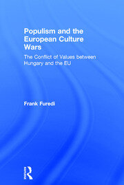
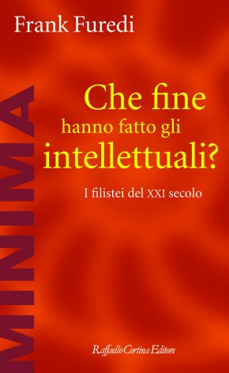
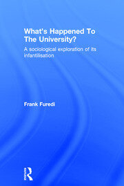

58:55 · 9 OPERE
Frank Furedi: Populismo e conflitti culturali.
Il filo del discorso
La presentazione di Populism and the European Culture Wars di Frank Furedi diventa una discussione sul ruolo degli intellettuali, sulla tolleranza e sulla legittimazione del potere. Dr Divago richiama prima i libri di Furedi sulla cultura e sull’università, distinguendo la crescita dell’istruzione dalla qualità del dibattito. La metafora di O’Brien in 1984 introduce la sua critica alle risposte prefabbricate e all’identificazione dell’individuo con i potenti.
Leggi la sintesi completaRiduci la sintesi
Luciano, la canzone Russians, la parabola kafkiana Davanti alla legge e Robert Frost offrono immagini diverse del giudizio personale e della ricerca di una strada propria. Il saggio On Tolerance è poi utilizzato per distinguere il rispetto della libertà altrui dall’obbligo di condividere o approvare ogni convinzione. Dal commento Heroes of the hour proviene invece la critica al mito del panico inevitabile nelle emergenze e l’attenzione alla cooperazione delle comunità. Il ritorno al libro principale porta al conflitto fra Ungheria e istituzioni europee, all’autorità degli esperti, ai poteri economici transnazionali e al rischio insito nella scelta democratica. Le valutazioni su UE, banche centrali e governi restano attribuite a Furedi o a Dr Divago. Il passaggio su Lagarde, Ecuador e Assange richiede una correzione cronologica: il prestito FMI ricordato precede l’arresto, e il collegamento accusatorio non è dimostrato. La conclusione difende la precisione delle parole e distingue l’appartenenza culturale dagli usi aggressivi del nazionalismo.
I libri nel discorso

Populism and the European Culture Wars: The Conflict of Values between Hungary and the EU
Note sul riferimento
Copertina: Routledge, prima edizione, copyright 2018, 152 pagine; ISBN 9781138097407.
Copertina autentica della fonte editoriale, ispezionata integralmente; l’edizione illustrata non è assegnata al filmato.
Titolo e sottotitolo espliciti all’apertura, in traduzione orale italiana.

Che fine hanno fatto gli intellettuali? I filistei del XXI secolo
Note sul riferimento
Copertina: Raffaello Cortina, Minima 87, gennaio 2007; il catalogo dell’editore indica 212 pagine; ISBN 9788860300980.
Copertina autentica della fonte editoriale, ispezionata integralmente; l’edizione illustrata non è assegnata al filmato.
Where Have All the Intellectuals Gone? e titolo italiano citati esplicitamente; più avanti è letta la presentazione editoriale.

What’s Happened To The University? A sociological exploration of its infantilisation
Note sul riferimento
Copertina: Routledge, prima edizione, copyright 2017, 214 pagine; ISBN 9781138212916.
Copertina autentica della fonte editoriale, ispezionata integralmente; l’edizione illustrata non è assegnata al filmato.
Titolo inglese e sottotitolo sull’infantilizzazione espliciti.

1984
Note sul riferimento
Copertina: Newton Compton · edizione illustrativa
O’Brien e Winston Smith espliciti; ulteriori richiami a due più due e al titolo 1984.

Dialoghi dei morti
Note sul riferimento
Copertina: Aurora Boreale · 2024 · introduzione di Nicola Bizzi
Immagine autentica dell’opera, controllata visivamente; l’edizione di riferimento non è attribuita al filmato.
Autore e raccolta espliciti, singolo dialogo non localizzato.

Russians
Identificazione probabile
Note sul riferimento
Copertina del singolo musicale Russians,12pollici: Canzone del 1985, in The Dream of the Blue Turtles. La immagine è la copertina del singolo12pollici Russians, con Gabriel’s Message indicato come lato B, nella discografia ufficiale. Non è una copertina libraria, né la nuova registrazione benefica del 2022.
Titolo Russians, nome Sting e lato BGabriel’s Message visibili. Supporto discografico distinto dall’album e dalla versione 2022; nessun ISBN o edizione di libro attribuiti.
Canzone riconoscibile dal verso sui bambini russi; titolo ed autore non pronunciati, identificazione probabile.

Davanti alla legge
Identificazione probabile
Note sul riferimento
Copertina: Vitalis, Edizione di Praga, 2024
L'indice del campione Vitalis colloca Davanti alla legge a pagina 42. Edizione italiana illustrativa, traduzione di Giuseppina Gatta, postfazione di Harald Salfellner tradotta da Manuela Boccignone; non identificata nel video.
Autore esplicito, parabola della porta riservata al singolo: titolo inferito dalla trama.

The Road Not Taken
Identificazione probabile
Note sul riferimento
Copertina della raccolta: Poesia del 1915, raccolta in Mountain Interval nel 1916. Copertina della raccolta Dover The Road Not Taken and Other Poems, 1993, 64 pagine.
Copertina autentica della raccolta Dover, non fascicolo autonomo della singola poesia o edizione vista nel video.
Frost esplicito e versi delle due strade; titolo non pronunciato.

Malleus Maleficarum (Il martello delle streghe)
Note sul riferimento
Copertina: The Hammer of Witches: A Complete Translation of the Malleus Maleficarum, traduzione di Christopher S. Mackay, Cambridge University Press, paperback 2009, 664 pagine; ISBN 9780521747875.
Copertina autentica della traduzione commentata inglese Cambridge 2009, nella quale Christopher S. Mackay è il traduttore e studioso dell’opera. Il nome in copertina non viene scambiato con quello dell’autore medievale; nessuna edizione è attribuita al video.
Titolo esplicito nella discussione dell’intolleranza verso chi non crede alle streghe.